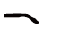

0%
Loading
0%
读取数据...

镜框设置
镜框设计

镜框色彩

镜腿设置
镜腿设计
镜腿色彩
参数设置
款式外观
-
运动款/非运动款:
-
四边形/三角形:
-
镜框型号:
-
镜框颜色:
-
镜腿型号:
-
镜腿颜色:
镜框参数
-
尺寸（镜宽比）: loading0.7 1.0
-
宽度（俯视）: loading0.5 5.0
-
最小厚度限制:
-
厚度（正视）: loading0.5 5.0
上梁
-
双中梁:
-
上梁定位锁定:
-
上梁厚度: loading1.0 10.0
-
上梁位置: loading0.0 1.0
-
上梁上弧弯度: loading-5 5
-
上梁下弧弯度: loading-5 5
-
上梁前后弯度: loading-5 5
下梁
-
下梁定位锁定:
-
下梁厚度: loading1.0 10.0
-
下梁位置: loading0.0 1.0
-
下梁上弧弯度: loading-5 5
-
下梁下弧弯度: loading-5 5
-
下梁前后弯度: loading-5 5
鼻托参数
- 生长鼻托: